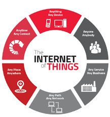

As a student studying computer engineering I have always preferred the software engineering aspect more than the hardware engineering side. Some of my interests in software engineering include game development, cybersecurity, and the Internet of Things. Growing up, I always had a PlayStation or an Xbox; I have always enjoyed playing games and seeing the new features and stories told in every new release. After learning about software engineering I have wanted to learn more about game development and how to create these games I have been playing my entire life. Before leaving college I would like to do a self project where I create a simple game that I can share with others who would actually play and enjoy the game.

My interest in cybersecurity began recently when working on my junior project and learning some basics about drone security. Joining a SCADA lab at the start of my senior year really piqued my interest in this field, as we have been shown how everything around us will tell us a story. Being able to assess the risk of various things from a cybersecurity perspective is very interesting, as you can see just how easy it can be to launch a cyber attack at some places. I had never heard of the Internet of Things until taking a course in my junior year on the topic. The Internet of Things, or IoT, is in things all around us from doorbell cams, home security systems, appliances, Alexa, and many other things that are all around us. IoT is very interesting to me because it connects all of these various devices together and allows us to use a device to control the other devices. As shown in my projects section, a project I have worked on dealing with IoT was WatchTower. This was one of the projects I enjoyed the most as we were able to use a beach safety API, pull that data into a cloud, and disperse it to a Raspberry Pi and to a HTTP endpoint. Having this project really brought out my interest in IoT as it was one of the most enjoyable projects I have done, and it put various things such as hardware and software together.
In the future I would like to learn more about game development as it is one of my interests in software engineering. One of my dream jobs would be to work under a game company like 2K, EA, or Treyarch. In order to reach this goal I want to spend time taking courses and learning about game development and creating my very own game. I would also like to learn more about JavaScript. After learning some of the basics, I would like to become proficient in it, as it seems to be a coding language that can be used for various projects. An experience that would greatly interest me is going to a large game development company and just getting to watch and learn how they create the games that I have played for years.